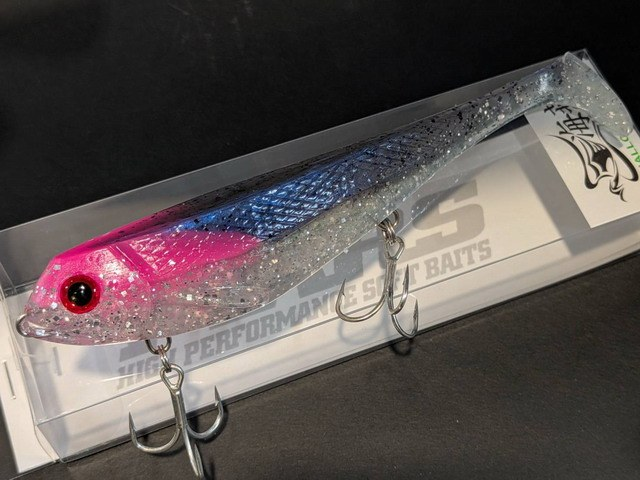
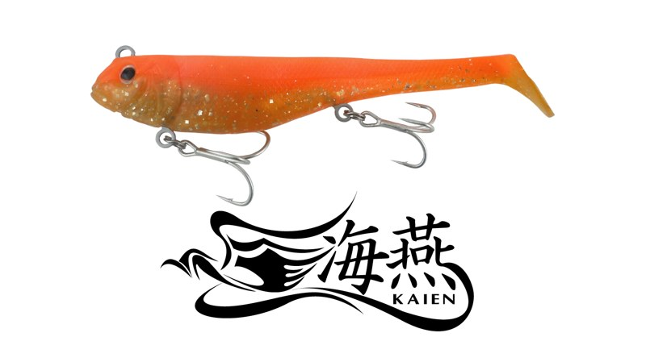
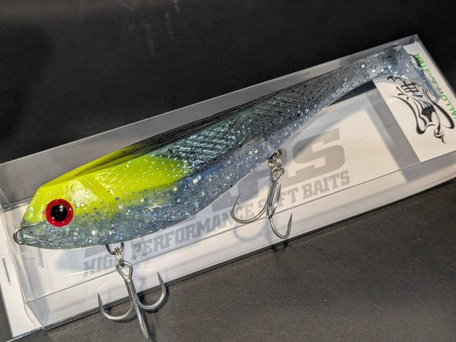
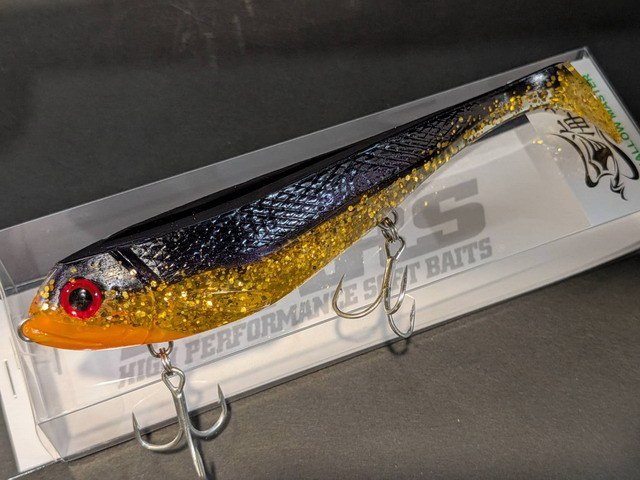
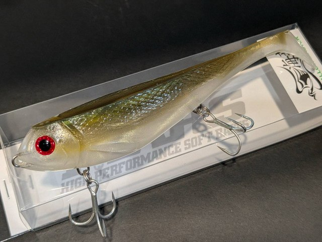
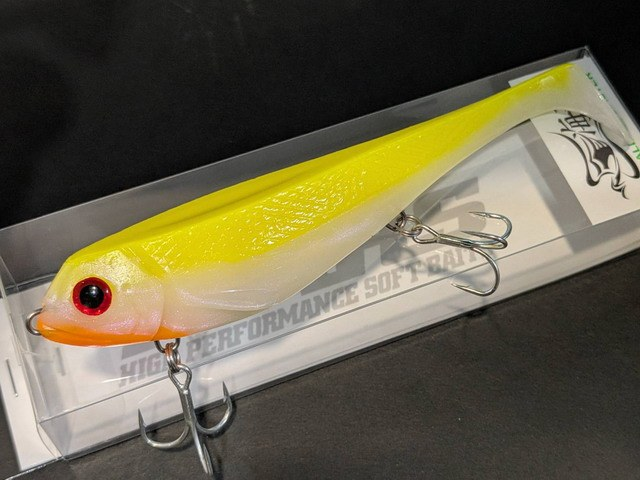
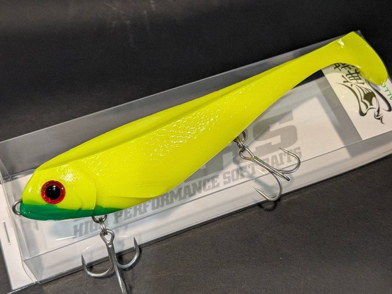
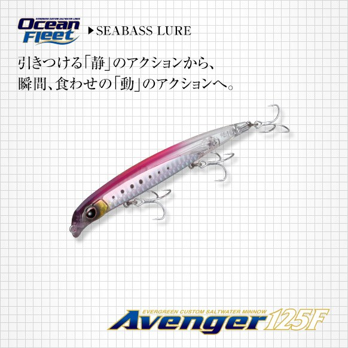

海燕（カイエン）シャローマスター
海燕（カイエン）シャローマスターは、マーズの元祖シーバス専用ソフトスイムベイト「海燕」の、シャローエリア攻略モデルです。
元の海燕がミドル〜ボトムを得意とするのに対して、シャローマスターは浮き上がりやすい形にして、10〜50cmの浅いレンジをデッドスローで引けるのが最大の特徴。鮎・ボラ・コノシロなど、秋以降の大きめのベイトを食べているシーバスに合わせたサイズです。

画像出典:キングフィッシャー
スペック
- メーカー
- マーズ（MARS／ヒルクライム）
- タイプ
- ソフトスイムベイト（シーバス専用）
- 全長
- 135mm
- 重さ
- 30g
- レンジ
- 10〜50cm
- フック
- トレブルフック標準装備
- カラー
- 全6色
- ターゲット
- シーバス
- 価格
- 1,815円（税込）
▼今すぐチェック
海燕 シャローマスターの特徴
元祖シーバス専用スイムベイト「海燕」の、シャロー攻略モデル
-
浮き上がりやすい形でデッドスローが効く
元の海燕よりも浮き上がりやすい形状で、シャローでのスローリトリーブや、河川でのドリフトが得意。巻くのをゆっくりにしても底をこすりにくい。
-
ソフト素材のナチュラルなウォブンロール
ソフトベイトの素材で、生きた魚のような自然なウォブンロールを出す。流れのある場所でも飛び出しにくい独自のヘッド形状になっている。
-
シーバスロッドで扱える大きめサイズ
135mm・30gと、秋以降の大きいベイトに合わせたサイズながら、シーバスロッドで投げられる重さにおさえている。
海燕 シャローマスターの使い方
基本は着水したらすぐに巻きはじめ、水面下10〜50cmをデッドスローでただ巻きする使い方です。ロッドを立て気味にすると、さらに浅いレンジをキープできます。
河川では、流れに対して斜め上流へ投げ、ラインを張りすぎないように流れに乗せてドリフトさせると、流されてくる弱ったベイトのように見せられます。
海燕 シャローマスターの得意な状況
秋の落ち鮎や、ボラ・コノシロなど大きめのベイトが入っている河川・河口のシャローで出番です。
ハードルアーでは浅すぎて引けない水深を、大きなシルエットでゆっくり見せられるのが強み。特にナイトゲームで効果を発揮します。秋の落ち鮎の時期には、大型のシーバスがよく釣れるパターンにはまります。
ワンポイント
流れのある場所では、巻くスピードではなく「流れとの角度」でレンジを調整するのがコツです。流れに対して横に引くほど浮き上がり、下流に向けるほど潜るので、ヘッドが水面を割らないぎりぎりを探りましょう。
海燕と海燕 シャローマスターの使い分け

画像出典:マーズ（ヒルクライム）公式HP
| モデル | 全長／ |
得意な |
|---|---|---|
| 海燕 | 5インチ／ |
ミドル〜ボトム。 |
| 海燕 シャローマスター | 135mm／ |
10〜50cmの |
海燕のスペックはマーズ（ヒルクライム）公式HP、シャローマスターのスペックは販売店（キングフィッシャー）の記載より。シャローマスターの公式の製品ページは、まだ確認できていません。
カラー
海燕 シャローマスターのカラーを紹介します。
 PHボラ
PHボラ
ボラ（イナッコ）を食べている時に。

CHコノシロコノシロなど大きいベイトの時に。

クロキン夜の河川で、シルエットをはっきり見せたい時に。

リアルアユ秋の落ち鮎パターンに。

チャートバックパール濁りや暗い時間帯に目立たせたい時に。

マットチャートさらに濁りが強い時の、アピール重視のカラー。
※カラー名は販売店（キングフィッシャー）の記載より。
画像出典:キングフィッシャー
▼今すぐチェック
海燕 シャローマスターに似ているルアー
-
 アルカリシャッド
コアマン
詳細はこちら＞
アルカリシャッド
コアマン
詳細はこちら＞
シーバス用ワームの定番。もう少し小さいシルエットで誘いたい時に。
-

アベンジャー125F エバーグリーン 詳細はこちら＞同じく河川のシャローをゆっくり引けるリップレスミノー。
-
 カゲロウ155F
メガバス
詳細はこちら＞
カゲロウ155F
メガバス
詳細はこちら＞
大型ベイトのシャロー攻略に。ハードルアーで比べたい時に。